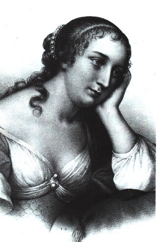
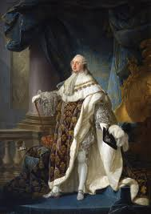

ÔNG BÀ LAFAYETTE (1757-1834) (1759-1807
Những người tư cách như vậy sẽ lưu hưởng muôn thuở trong khi bọn vua chúa và những mũ miện họ đội trên đầu đều
phải thành cát bụi hết.
Such characters should live to posterity, when kings and the crowns they
wear must have mouldered into dust.
Charles Fox.
Tinh thần đoàn kết, chí nguyện của một dân tộc đối với một dân tộc khác xuất hiện chắc là sớm lắm trong lịch sử nhân loại. Phong trào chí nguyện quân lớn nhất, ảnh hưởng sâu xa nhất là phong trào Thập tự quân thời Trung cổ. Nhưng một cá nhân tự ý phá sản, hy sinh tánh mạng mà giúp một dân tộc mở đầu được một chương trong lịch sử của họ, thì tôi chưa thấy ai bằng Lafayette và Byron, mà Lafayette đi trước Byron. Suốt nửa thế kỉ ông chiến đấu cho Tự Do và trong cuộc chiến đấu đó, ông nhờ công của bà vợ rất nhiều. Bà là một người vợ, một người mẹ kiểu mẫu, trọn đời hy sinh cho chồng con, mà tiếc thay khi chép tiểu sử của ông, nhiều người quên không nhắc tới bà.
Hai ông bà đều sinh ra trong những gia đình quí phái bực nhất ở Pháp, dưới triều đại Louis XV.
Họ Lafayette nổi danh về nghề võ ở miền Auvergne từ thời Trung cổ. Tới cuối thế kỉ XVII, một bà Lafayette viết cuốn La Princesse de Clèves, tiểu thuyết bất hủ đầu tiên của Pháp. Hầu tước Motier de Lafayette thân phụ của ông Lafayette, người chúng tôi chép tiểu sử ở đây đền nợ nước trong cuộc chiến đấu với quân Anh, có sách chép là vào năm 1757(1), có sách lại chép là vào năm 1759(2). Dù 1757 hay 1759 thì vị anh hùng của chúng ta cũng mồ côi rất sớm, vì ông sanh ngày 6.9.1757. Thân mẫu ông đòi đặt tên ông là Marie vì bà tin rằng Thánh mẫu đã cho bà «đứa bé» đó. Bà con bên chồng chế rằng con trai mà lại bắt nó mang tên con gái; nhưng bà cương quyết giữ ý riêng và tên khai sanh của cậu bé là Marie-Paul-Joseph-Roch-Yves-Gilbert Motier de Lafayette; trong nhà thường gọi tắc là Gilbert.

Mr Lafayette
Hồi nhỏ Gilbert được hai bà cô nuôi nấng, dạy dỗ, và cưng lắm, vì bà mẹ thường lên Paris giao thiệp với các bà quí phái trong triều Louis XV, để cậu ở lại Auvergne.
Cậu bé có tên con gái, sống giữa đám phụ nữ đó, mới tám tuổi đã tỏ ra có khí phách của con nhà tướng.
Mùa đông năm 1765, dân quê trong vùng thường thấy một con thú rừng to lớn lạ thường mà không biết là loại gì tới phá phách trại ruộng, bắt gà và heo. Bà nội Gilbert cấm cậu không được xa nhà, cậu không chịu, hăm hở cắp cây gươm nhỏ xíu, đòi đi giết ác thú. Cậu bảo: «Con là lãnh chúa của miền này, con phải che chở dân trong miền». Nhưng có một thợ săn giết được con vật; cậu giận rằng sao không để cho cậu hạ nó. Cậu chỉ ưa nghe kể những chuyện nghĩa hiệp và mơ mộng một ngày kia phi ngựa đi tìm vinh quang trên khắp địa cầu.
Mười tuổi Gilbert lên Paris học trường Collège du Plessis. Rất trọng kỉ luật nhưng không chịu được một sự bất công nào. Có lần một bạn học bị phạt một cách vô lý, cậu tổ chức một cuộc phản đối trong lớp, để bênh vực danh dự cho bạn; nhưng nhiều bạn nhút nhát không dám theo. Cũng may ông giáo hiểu lòng ngay thẳng của cậu, không trừng trị; nếu trừng trị thì chắc cậu đã «dùng gươm mà chống cự lại»(3), vì hồi đó thanh niên trong hạng quý phái được phép đeo gươm khi đi ra đường.
Lần khác, ông giáo ra một bài luận tả một con ngựa quý, nghĩa là rất phục tòng người cưỡi. Cậu không chịu viết theo ý ông giáo, mà tả một con ngựa trông thấy cây roi là lồng lên, hất người cưỡi văng xuống đất. Ông giáo đọc bài luận, chỉ mỉm cười chứ không giận, sau còn nhắc lại chuyện đó cho gia đình Lafayette.
Năm 1770, hồi 13 tuổi, thân mẫu mất, Gilbert được hưởng một gia tài đồ sộ lợi tức là 120.000 đồng «liu» mỗi năm (mỗi liu-livre là một đồng bạc nặng khoảng năm gam).
Cậu vô Hàn lâm viện Versailles để học thêm về võ bị và kết bạn với những thanh niên quý phái nhất của Pháp.
Năm sau, gia đình cho cậu hay đã hỏi cô Adrienne con gái quận công D'Ayen cho cậu và cậu vô ở trong điện Luxembourg.
Cô Adrienne kém cậu hai tuổi, sanh ngày 2.11.1759 trong một gia đình quý phái cũng vào bậc nhất. Nhà chỉ có năm chị em, cô là thứ nhì, sống với cha mẹ trong một dinh thự lớn ở Paris mà nhiều người khen là một điện Versailles nhỏ. Cô không đẹp, nhưng thông minh, tinh thần già giặn, sớm biết suy nghĩ. Ông thân chỉ biết tán tỉnh vua Louis XV, bà thân phải lo mọi việc trong nhà, dạy dỗ các con vừa nghiêm vừa từ, và nhờ bà mà cả năm cô con gái đều có đức hạnh, nhất là cô Adrienne.
Gilbert đã giàu sang mà lại là con một, bà quận công D'Ayen thấy xứng lắm, nhưng ngại hai trẻ còn nhỏ quá: Gilbert mới 14 tuổi, Adrienne 12 tuổi; nên bà đề nghị với bên nhà trai để hai năm sau sẽ cưới, trong thời gian đó, Gilbert lại ở nhà bà, bà sẽ bổ túc sự giáo dục cho. Bên nhà trai chịu và tất nhiên chẳng ai hỏi ý kiến của hai trẻ hết. Thời đó việc hôn nhân đều do người lớn quyết định, mà khi quyết định, người ta chỉ nghĩ đến chuyện môn đăng hộ đối, và tính toán rất phân minh về môn hồi môn. Phần may rủi thường ngang nhau: có đám sống chung với nhau mới được vài bữa đã chê nhau, ghét nhau, thì cũng có những đám tạo được hạnh phúc hoàn toàn cho nhau như cặp Lafayette. So với gia sản nhà trai, của hồi môn của cô Adrienne tuy nhỏ; chỉ có hai trăm ngàn liu thôi vì còn bốn chị em nữa; nhưng bố vợ có quyền thế trong triều, mà mẹ vợ lại rất mực quý rể, nên Gilbert thấy đời đẹp như bình minh.
Mới cưới được một năm, họ đã sanh một đứa con gái, tên Henriette (mất hồi hai tuổi) và Gilbert nhờ nhạc gia được bổ chức Thiếu úy trực thuộc Thống chế De Broglie ở Metz, một người bên họ vợ. Hoạn lộ quả thực là thênh thang.
Thiếu úy Lafayette lại Metz tập sự mà chẳng hề phải tập trận lấy một buổi, chỉ ăn bận cho sang để dự các bữa tiệc trong gia đình quý phái, khiêu vũ và tán gái.
Tập sự ba tháng như vậy đã đủ - quận công D'Ayen đâu muốn con gái mình phải xa chồng lâu - và Lafayette được đổi về Paris, để hưởng những thú vui ở Versailles.
Năm đó là năm 1775, vua Louis XV mới băng và vua Louis XVI mới lên ngôi được một năm. Trong thời trị vì của Louis XV một ông vua đẹp trai, thông minh nhưng nhu nhược, làm biếng chỉ mê thanh sắc, bị mỹ nhân (bà De Pompadour và bà Du Barry) chi phối - nước Pháp suy nhược lần lần, thua nhiều trận, nhất là trận chiến tranh bảy năm (Guerre des sept ans), phải nhường lại cho Anh những thuộc địa ở Canada và ở Ấn Độ; quốc khố gần như rỗng mà dân chúng rất khổ sở, è cổ ra đóng thuế.
Vua Louis XVI, bản tính tốt, hiền lành, nhưng còn nhu nhược hơn Louis XV mà hoàng hậu Marie-Antoinette gốc Áo, rất đẹp, nhẹ dạ, xa xỉ quá đỗi, nên tình cảnh trong nước ngày càng nguy hơn: đâu đâu cũng nổi lên lời ta thán của nông dân. Không khí đã bừng bừng lên rồi.
Việc nước hồi đó gần như việc riêng của các gia đình quý phái, mà bọn này không thấy sự suy sụp sắp tới, chỉ lo lấy lòng vua và hoàng hậu: bọn đàn ông nhàn cư quá, không biết làm gì, rủ nhau đi săn, và ganh đua nhau chiếm «trái tim» của các bà. Ông nào cũng có một vài tình nhân, và thường thường mỗi bà cũng có một «Cavalier servant», tức một chàng sang trọng phong nhã để đưa đón, hầu hạ mình, tán tỉnh mình và tâm sự với mình. Ở Versailles, một ông chồng mà thủy chung với vợ thì bị mọi người chê là ngốc.
Các bà đua nhau ăn mặc theo mốt của hoàng hậu: váy thì nong khung ở trong, xòe ra, phồng ra, càng lớn càng quý; tóc mượn thì bới cao lên, càng cao càng đẹp, cao tới hai gang, ngất ngưởng ở trên đầu.
Một thanh niên mới 18 tuổi sống trong xã hội đó, tất bị trào lưu lôi cuốn liền và Lafayette bắt đầu ve vãn bà bá tước Aglaé d'Hunolstein, một thiếu phụ trẻ, đẹp, chồng làm đại tá. Adrienne biết hết, vì ở Versailles người ta không cho rằng những chuyện đó cần giữ bí mật, trái lại là khác; nhưng nàng không ghen vì nhờ sự giáo dục của mẹ.
Lafayette vụng về, không thành công trong việc chiếm trái tim Aglaé, không bị hắt hủi mà cũng không được người đẹp tặng cho một ân huệ nào cả. Bản tính của ông vẫn thích nghề võ và những tư tưởng tự do, lần lần thấy không khí trụy lạc, luồn cúi ở Versailles không hợp với mình. Có lẽ một phần cũng vì bị thất tình, lòng tự ái bị thương tổn, ông lại càng mong lập nên một sự nghiệp gì để được thiên hạ ngưỡng mộ.
Lúc đó Hoa Kỳ còn là một thuộc địa của Anh. Không chịu nổi chính sách độc tài của chánh quốc, dân chúng nổi lên phản kháng, bị Anh đàn áp. Họ đòi được bầu đại diện vào Quốc hội Anh, nếu không thì không chịu nộp thuế. Quy tắc đó chính là quy tắc của Anh, nhưng Anh chỉ muốn áp dụng nó ở chính quốc, còn thuộc địa mà đòi hỏi như vậy là láo, phải trừng trị. Mùa xuân năm 1774, Anh đem quân lại vây hải cảng Boston để trừng phạt thành phố này vì đã tẩy chay cuộc buôn bán trà của công ty Đông Ấn Độ. Người Hoa Kỳ phản ứng lại, họp Hội đồng Thuộc địa(1), rồi thảo bản Tuyên ngôn Độc lập.
(1) Chỉ có George không dự.
Năm sau (1775), hội đồng họp lần thứ nhì, cử George Washington làm tổng tư lệnh quân đội Hoa Kỳ và chiến tranh giữa Anh và Hoa Kỳ bắt đầu vào giai đoạn quyết liệt. Quân Anh thiện chiến, đầy đủ khí giới; hải quân Anh rất hùng cường có thể tấn công các thành phố và bờ biển bất kể lúc nào. Quân Mỹ tuy hăng hái, nhưng thiếu kỉ luật, thiếu luyện tập, thiếu súng ống, đành phải dùng chiến thuật du kích. Thành thử thắng bại bất phân, mà sự chiến đấu kéo dài. Những cuộc chiến tranh như vậy, thời gian luôn luôn có lợi cho dân bản xứ.
Triều đình Pháp muốn rửa cái nhục thua Anh và phải cắt Canada cho Anh năm 1763, vẫn định giúp Mỹ; Y Pha Nho cũng muốn nhân cơ hội, đuổi Anh ra khỏi Gibraltar, rồi chiếm thuộc địa của Anh ở Bắc Mỹ, nhưng cả Pháp lẫn Y Pha Nho còn do dự, không biết Hoa Kỳ có thể thắng nổi Anh hay không, nếu không thắng nổi thì Anh tất sẽ quay lại trả thù mà nguy cho mình. Tuy nhiên, nếu người Pháp nào làm chí nguyện quân qua giúp Hoa Kỳ với tư cách cá nhân, và vì tinh thần yêu Tự do, thì triều đình Louis XVI cũng vui vẻ làm ngơ. Hơn nữa, một đại thần của Pháp, thống chế De Broglie hình như còn được mật lệnh giúp đỡ ngầm Hoa Kỳ. Vị thống chế này nuôi tham vọng rằng nếu Anh thua thì Hoa Kỳ sẽ thuộc về Pháp và ông sẽ được làm một chức như Phó vương ở Hoa Kỳ, cho nên chú ý theo dõi tình hình ở Mỹ và để ý tìm những thiếu niên anh tuấn, có chí khí, yêu tự do, hạng đồ đệ của Voltaire, Rousseau, Diderot. Lúc đó, Lafayette đang ở dưới quyền ông, tại Metz. Ông thấy có thể dùng Lafayette làm một quân xe trong ván cờ của mình được, nên phái Lafayette về Paris tiếp xúc với Sứ thần Hoa Kỳ, Silas Deane và với Franklin, tất nhiên với tư cách cá nhân. Lafayette rủ thêm hai thanh niên quý phái nữa: Noailles và Ségur. Thế là đủ «ba chàng ngự lâm pháo thủ».
Lafayette được Deane tiếp đón niềm nở. Một thanh niên quý phái của Pháp mà làm chí nguyện quân cho Hoa Kỳ, còn sự tuyên truyền nào quý bằng nữa! Và khi Lafayette được bắt tay Franklin, năm đó đã 71 tuổi, danh vang lừng khắp châu Âu, thì ông bỗng thấy mình thành một nhân vật quan trọng, có thể đem cả tài sản, tính mệnh hi sinh cho đồng bào của Franklin được.
Ông bỏ ra trên năm ngàn «liu» để thuê tàu và mua khí giới chở qua Hoa Kỳ, và ông sẽ cầm đầu một nhóm quân mà ông sẽ tuyển để qua chiến đấu bên cạnh Washington. Ông biết rằng gia đình bên vợ không tán thành dự định đó, nhưng khi hỏi ý kiến vợ thì bà đã không ngăn cản, lại còn hứa giữ kín cho, mặc dầu bà biết rõ hậu quả của một cuộc phiêu lưu như vậy: phải chịu cảnh một mình một bóng ít nhất là trong một năm, có thể thành một quả phụ lắm; mà nếu chồng có sống sót và trở về thì nhà vua cũng không ưa vì đã hành động trái với mệnh lệnh của triều đình, như vậy tương lai của chồng khó mà rực rỡ được. Năm đó bà mới 18 tuổi mà đã can đảm ngầm giúp chồng thực hiện được lý tưởng chiến đấu cho Tự Do, quả thực là đáng cho ta phục.
Mọi việc thu xếp xong, và ngày 26.4.1777, ông xuống tàu La Victoire để qua Mỹ(4). Ông đã bỏ ra hết thảy 146.000 «liu» giúp nghĩa quân Hoa Kỳ; và Deane để đáp lại công đó, tặng ông một chức tướng trong quân đội Hoa Kỳ. Một vị tướng chưa hề ra trận lần nào mà mới 20 tuổi!
Vua Louis XVI hay tin, xuống chiếu truy nã lấy lệ để khỏi mất lòng Anh hoàng, nhưng quận công D'Ayen không hiểu ý nhà vua, giận lắm, la lớn: «Vợ nó sắp sanh mà nó bỏ ra đi như vậy! Cái thứ nhu nhược đó mà lại làm bộ anh hùng! Hoàng thượng sẽ quở, tao biết ăn làm sao, nói làm sao bây giờ đây?». Các ông hầu, bà bá ở Versailles đều mỉa Lafayette là «con người đó mà yêu gì Tự Do, chẳng qua là muốn được nổi danh để mong chinh phục trái tim của nữ bá tước Aglaé d'Hunolstein!».
Những lời cay độc đều tới tai Adrienne, bà nén lòng chịu được hết và ngày ngày ngóng tin chồng. Bốn tháng sau bà mới nhận được bức thư đầu tiên viết ở dưới tàu ngày 30.5 và 7.6, trong đó có đoạn:
«Khi anh tự ý giúp nước Cộng hòa đáng mến đó (tức Hoa Kỳ), anh không có tham vọng gì riêng tư hết; tìm hạnh phúc cho họ, tức là tìm danh vọng cho anh. Anh mong rằng một ngày kia em sẽ thành một công dân tốt của Hoa Kỳ... Hạnh phúc của Hoa Kỳ liên quan mật thiết tới hạnh phúc của toàn thể nhân loại.»
Ngày 15.6 Lafayette trông thấy bờ châu Mỹ và ít bữa sau ông tới Charleston, rất may mà dọc đường không bị tàu Anh chặn. Cảm tưởng đầu tiên của ông là người Hoa Kỳ rất dễ thương, giản dị, thích giúp đỡ kẻ khác, yêu tổ quốc, tự do và bình đẳng. «Người giàu nhất và người nghèo nhất cũng ngang hàng nhau; và mặc dầu có những đồn điền mênh mông, mà không có sự cách biệt giữa giàu nghèo trong sự giao thiệp.»
Ông được dân chúng hoan nghênh nồng nhiệt ở Charleston và dư luận ở Pháp xoay ngược lại: những kẻ trước kia mỉa mai ông bây giờ ngưỡng mộ ông, thèm khát danh vọng của ông.
Nhưng khi tới Philadelphie, kinh đô của phong trào Độc lập, ông hơi thất vọng, vì không được hoan nghênh như ở Charleston. Một số nghị viên trong hội đồng chẳng nghĩ gì tới sự hy sinh của ông, bất chấp cả những lời giới thiệu nồng nàn của đại sứ Deane, ngỡ ông vào cái hạng phiêu lưu, gần như giang hồ, qua Mỹ chỉ để làm giàu. Tham mưu trưởng gì cái chàng mặt còn non choẹt ấy! Đại sứ Deane lấy tư cách gì mà phong cho chàng chức đó?
Mới đầu ông muốn nổi quạo, nhưng nén được ngay và nhã nhặn bảo họ: «Tôi qua đây không phải để làm giàu vì tôi đã bỏ tiền ra mua khí giới và mộ lính, cũng không phải vì ham cái chức tham mưu trưởng mà ông đại sứ Deane hứa với tôi, tôi qua đây chỉ vì yêu Tự Do và muốn giúp dân tộc Hoa Kỳ dành lại Tự Do. Tôi không yêu cầu các ông giữ lời hứa của đại sứ Deane, chỉ xin được chiến đấu trong quân đội Hoa Kỳ như một người lính thường, và chiến đấu không lương».
Cử chỉ đẹp đẽ, cao cả đó làm cho Hội đồng phải suy nghĩ và người ta bằng lòng giữ chức Tham mưu trưởng cho ông, rồi dắt ông lại trình diện với Tổng tư lệnh Washington.
Hai vị anh hùng một già một trẻ này mới gặp nhau đã mến nhau liền. Washington năm đó 45 tuổi quắc thước, bình tĩnh, nghiêm trang lạ lùng, thân mật tiếp Lafayette trong một chiếc lều, thẳng thắn bày tỏ tình hình đen tối cho ông nghe: thiếu khí giới, thiếu cả lương thực và quần áo. Nhưng Washington còn ngại, chưa dám giao quyền chỉ huy cho ông. Lúc đó, quân Anh tấn công Philadelphie. Lafayette xin được ra mặt trận, bị thương nhẹ ở Brandywine. Ông mừng rằng đã được thử lửa: từ nay các bạn Hoa kỳ sẽ coi ông như đồng bào của họ.
Ông viết thư về cho bà, kể tin đó, và dặn có ai hỏi tin tức về trận Brandywine thì đáp rằng trận đó không quan trọng gì cả, Philadelphie là một tỉnh nhỏ, quân Anh chiếm được cũng không lợi gì cho họ.
Nhờ những bức thư đầy tin tưởng đó, chẳng những Adrienne mà cả gia đình bên bà cũng có thiện cảm với Hoa Kỳ. Dân tộc Pháp coi Lafayette là một vị anh hùng và tới đâu, Adrienne cũng được mọi người kính trọng, ngưỡng mộ.
Tháng hai năm 1778, Voltaire rời Ferney, nơi ông lánh nạn và ở ẩn, đề về thăm Paris. Dân chúng hoan hô ông như một vị «Cha già», làm cho vua Louis XVI phải ghen. Ông tiếp các đại thần Pháp mà bận quần áo ngủ! Ở Hàn lâm viện người ta bày một tượng bán thân của ông và các bà quý phái nhảy múa chung quanh tượng. Ở Hí viện, kịch Irène của ông được đem ra diễn, ông tới coi; khán giả thấy mặt ông, hò reo vang rạp, làm một số người ngoại quốc tưởng là họ điên, vội vàng ra về. Vinh dự biết bao bà Lafayette khi ông «vua không ngôi» đó, trong một cuộc tiếp tân long trọng tài dinh thự bà De Choiseul, quỳ một gối xuống sàn, nói với bà: «Tôi muốn tỏ lòng ngưỡng mộ hiền thê của vị anh hùng của Tân thế giới; ước gì tôi được sống tới khi thấy ông nhà giải thoát cho Cựu thế giới».
Triều đình Pháp lúc này đã ra mặt giúp Hoa Kỳ rồi, tháng bảy năm 1778, phái bá tước D'Estaing chỉ huy một hạm đội qua Mỹ. Washington mừng rỡ vì mùa đông đó, nghĩa quân đã không còn giày để đi, áo để mặt nữa.
Nhưng sự hợp tác giữa hai quân đội bao giờ cũng gặp nhiều chuyện rắc rối. Hễ thua trận thì tướng tá bên đây đổ lỗi cho sĩ tốt bên kia. Lafayette vì lòng ái quốc phải bênh vực D'Estaing và lính Pháp, như vậy sẽ mất uy tín đối với người Hoa Kỳ. Washington khôn khéo, để tránh cho Lafayette những nỗi khó xử, giao cho ông một nhiệm vụ khác là trở về Pháp vận động cho phong trào Độc lập của Hoa Kỳ.
Được cơ hội về thăm nhà, Lafayette rất mừng, xuống tàu Alliance, và ngày 6.2.1779 tới Brest. Súng nổ để chào lá cờ Hoa Kỳ, ông khoan khoái tưởng như để chào mình, vị anh hùng của hai lục địa.
Ông đã hãy tin rằng đứa con gái lớn của ông, Henriette đã mất, và đứa sau - cô Anastasia - sanh trong khi ông vắng nhà, đã được hai tuổi. Ông nóng về nhà để gặp mặt vợ con lắm, nhưng khôn khéo, lại thẳng ngay triều đình, trình diện với thượng thư Maurepas, và dâng tờ biểu lên xin nhà vua tha cho tội đã tự tiện quaHoa Kỳ hai năm trước. Maurepas hỏi chuyện ông luôn 2 giờ về tình hình bên kia Đại Tây Dương. Vua Louis XVI làm bộ trừng trị ông, bắt ông không được ra khỏi nhà, không được tiếp khách khứa trong mười ngày, Adrienne không cần gì hơn: sau hai năm xa cách, chồng bà hoàn toàn là của bà trong mười ngày đó. Ông thấy bà đẹp hơn trước, vì già dặn thêm, thùy mị thêm. Bà kể lể nỗi buồn rầu của bà khi ông mới đi: miệng thiên hạ sao mà độc thế, cứ quả quyết rằng ông bỏ vợ con vì thất tình với Aglaé d'Hunolstein. Còn ông thì không ngớt lời ca tụng Washington, một người mà ông trọng như cha, và ông thầm mong rằng dân tộc Pháp được một ông vua như vậy.
Sau mười ngày vui thú trong gia đình, tới những ngày được hoan hô giữa quần chúng.
Tại Hí viện, người ta diễn vở kịch L'amour français, soạn giả viết thêm mấy câu thơ để ca tụng Lafayette:
Thấy vị triều thần kia không? Còn nhỏ tuổi như vậy,
Mà từ bỏ cảnh êm đềm bên một bà vợ mới cưới,
Từ bỏ những thú vui mê hồn ở triều đình, ở Paris,
Ông chỉ hăng hái đi tìm vinh quang.
Nên mới bay qua bán cầu bên kia...
Khán giả quay mặt cả về phía ông bà, vỗ tay vang rạp. Và bà Aglaé d'Hunolstein cũng thấy vui trong lòng, tưởng đâu như chính vẻ đẹp của mình đã tạo nên bậc đệ nhất anh hùng của dân tộc. Bà De Simiane cũng đâm mê Lafayette, và ông được hai người đẹp nhất Paris đó chiều chuộng, làm cho biết bao nhiêu ông quý phái phải ghen. Nhưng Adrienne không ghen một chút nào; bà đã định hy sinh cho sự nghiệp của ông, cho lý tưởng của ông, và cảm tình của người khác đối với chồng bà chỉ là dấu hiệu tỏ sự thành công thôi. Cho nên bà càng tỏ ra vui vẻ và nhũn nhặn. Dân chúng Paris thấy vậy càng quý bà, làm thơ ca tụng:
Tôi đã tả vị anh hùng Lafayette;
Bây giờ tôi xin phát họa tính tình hiền thê của ông:
Xin các bạn tưởng tượng bà vừa là một người vợ
Đức hạnh vừa là một người bạn quý của ông.
Thế là các bạn sẽ có một hình ảnh đầy đủ về bà.
Gần tới lễ Noël năm 1779, bà sanh một cậu bé để nối dòng Lafayette, và hạnh phúc của ông bà thật đầy đủ. Được tin mừng vào hồi hai giờ khuya, ông vội vàng viết thư cho Franklin, bảo rằng sẽ đặt tên cho con là George Washington để «tỏ lòng kính mến» vị anh hùng của dân tộc Hoa Kỳ. Ông ở nhà vui thú với vợ con được một tuần, rồi lại đem hết thì giờ, tâm trí ra giúp đỡ Hoa Kỳ.
Ông bán đất cát được một trăm hai chục ngàn «liu», mua khí giới. Người quản gia của ông phàn nàn rằng «ông phá sản để mua vinh quang»; nhưng ông nghĩ rằng sự Tự Do vô giá, và bà đồng ý với ông. Vì triều đình Pháp tuy ra mặt giúp Hoa Kỳ, nhưng không hăng hái gì lắm. Quốc khố gần rỗng, mà Hoàng hậu tiêu tiền như nước. Tại điện Versailles, đêm nào cũng hội hè, yến tiệc; trông thấy cảnh phung phí, sa đọa đó, Lafayette phát gắt lên: «Tiền tiêu một bữa yến ở Versailles cũng đủ để giúp nghĩa quân Hoa Kỳ có đủ khí giới và quần áo».
Ông phải kiên nhẫn vận động với Thượng thư Maurepas và sau cùng, một phần nhờ tiền riêng của ông, ngày 14.3.1780, chiếc Hermione chở bốn ngàn lính, nhổ neo để qua Mỹ.
Ông tới Boston ngày mùng một tháng năm. Dân chúng công kênh ông lại Hội đồng. Tình hình vẫn không tiến triễn gì hơn. Đội quân của Washington chỉ có 6.000 người, tinh thần rất thấp vì thiếu quần áo, lương thực, mỗi ngày mỗi người chỉ được một ổ bánh. Hải quân Anh vẫn phong tỏa bờ biển.
Ông lại ngay Morristown để yết kiến Washington. Hai người ôm chầm lấy nhau, và bàn cách lợi dụng lúc tinh thần của quân đội hơi lên nhờ cuộc viện trợ của Pháp này để tấn công liền, may ra thắng được một vài trận thì tương lai sẽ khá.
Ông được lệnh tấn công Portsmouth, nhưng vì quân tiếp viện tới trễ, ông thất bại.
Sau trận đó, Washington phái ông xuống tiếp sức quân đội phương Nam. Tới Baltimore, ông họp các thương gia lại, yêu cầu họ giúp nghĩa quân hai ngàn liu để mua quần áo cho binh lính. Các bà trong tỉnh tổ chức một dạ hội để quyên tiền rồi đích thân may áo giúp quân đội.
Khi mọi việc dự bị đã xong, ông cho họp sĩ tốt lại bảo:
«Tôi khong giữ anh em đâu. Ai muốn về nhà với vợ con thì cứ về, đừng lấy vậy làm xấu hổ! »
Ai mặt mũi nào mà bỏ ông để về, ông, người đã từ biệt vợ con, bán ruộng đất qua đây giúp họ. Nhờ vậy, tinh thần quân đội tăng lên. Không còn một kẻ nào đào ngũ nữa.
Ngày 19.4, ông bỏ lại tất cả các trọng pháo và lều, để tiến quân cho mau, tấn công tướng Anh William Phillips trong lúc bất ngờ. Phillips chính là người đã bắn chết thân phụ ông hồi ông một hai tuổi. Ông quyết chí trả thù cho cha và ông trả thù được một nửa: Phillips bị thương chứ không bị bắt, và ít lâu sau mới tắt thở trên giường bệnh.
Ông vô được Richmond, tính cố giữ tỉnh đó, nhưng Cornwallis đem đại đội tới bao vây, ông phải lội qua sông, rút lui, nhập vào đội quân của Wayne, rồi tấn công Cornwallis trở lại.
Bốn ngàn quân của ông chiến đấu cực kì hùng dũng, hai bên thế ngang nhau. Đương lúc cầm cự bỗng có tin mừng, trung tướng De Grasse cầm đầu một đoàn 28 chiếc tàu viện binh từ Saint Domingue sắp tới. Washington và Rochambeau cũng kéo binh xuống tiếp. Bên Anh, đề đốc Digby cũng đương chỉ huy một hạm đội tới trợ chiến Cornwallis. Phải chiếm ngay Yorktown cho thế được vững, muốn vậy phải phá hai cái đồn ở tiền tuyến. Ông được lệnh tấn công đồn bên trái, Vioménil tấn công đồn bên phải. Vioménil trước kia có chuyện xích mích với ông, lần này ra vẻ thách ông bảo:
«Cái ngữ đó mà làm được trò trống gì!»
Lòng tự ái bị kích thích, Lafayette làm thinh, đốc thúc bốn trăm binh sĩ tấn công đồn. Ông tuốt gươm dẫn đầu, hăng hái làm gương cho họ, và chỉ trong một giờ chiếm được đồn mà không phải nổ một phát súng, trong khi đội quân của Vioménil chưa tiến được bước nào. Chiếm đồn xong rồi, ông mới sai một bộ hạ qua hỏi Vioménil xem có cần ông tiếp sức không. Vioménil mắc cỡ.
Cornwallis bị vây chặt, hai lần muốn phá vòng vây mà không được. Ngày 19.10, Cornwallis đành phải xin hàng không điều kiện, và bên nghĩa quân được thêm tám ngàn binh với rất nhiều khí giới.
Trận Yorktown là trận quyết định trong chiến tranh giành Độc lập của Hoa Kỳ. Từ đó phần thắng về phía nghĩa quân, Anh hết hy vọng cầm cự được nữa. Nội các Anh đổ. Washington cũng cố những vị trí đã chiếm được, đợi lúc Anh chịu ký hiệp ước đình chiến.
Lafayette thấy không cần ở lại giúp nghĩa quân nữa, xin Hội nghị cho phép về Pháp. Hội nghị tôn ông như một vị anh hùng thời cổ và để ông toàn quyền sử dụng chiếc tàu Alliance.
Ngày 21.1.1782, ông về tới Paris trong khi dân chúng ùn ùn kéo lại Đô sảnh để hoan hô Hoàng hậu Marie Antoinette vì bà mới sanh được một hoàng tử. Có người nhận ra được mặt ông, hô «Vạn tuế Lafayette», thế là dân chúng lại ùa về dinh thự của gia đình De Noailles, để tặng vị anh hùng hai cành nguyệt quế, y như thời xưa dân La Mã tặng những vị anh hùng của họ.
Trong nhà không có ai cả. Adrienne và cả nhà đã lại Đô sảnh để chúc mừng Hoàng hậu. Tin ông về đã tới tai nhà vua.
Louis XVI và Marie Antoinette kêu bà lại, cho phép bà về trước, nhưng bà lễ phép xin ở lại cho tới hết buổi lễ.
Mấy bữa sau, danh vọng của ông bà lên tới tuyệt đỉnh. Ông đã thành «vị anh hùng của hai thế giới», được vua tiếp ở điện Versailles, các bà quý phái tranh nhau mời hai ông bà lại dự tiệc. Thống chế De Richelieu đặt một bữa tiệc mời tất cả các thống chế của Pháp lại mừng một vị tướng mới 24 tuổi. Ở Đại kịch trường Pháp, trong buổi diễn vỡ Iphigénie en Aulide, một đào hát tặng Lafayette một vòng hoa kết bằng lá nguyệt quế. Cả rạp đều vỗ tay.

Madame Lafayette
Bà Aglaé d'Hunolstein và bà De Simiane đều niềm nở với ông, mà hai bà đó, bà De Simiane đẹp nhất. Quần chúng Paris đều gán bà cho Lafayette: «Ai anh hùng nhất thì được người đẹp nhất», đúng như tục cổ! Không ai ghen với ông cả, ai cũng nhận rằng ông là người xứng đáng nhất.
Đã tới tuổi trưởng thành (hồi đó 25 tuổi mới trưởng thành) ông mướn nhà riêng ở tại đường Rue de Bourbon. Vợ ông khéo chiều chồng, trang hoàng phòng làm việc hợp với ý ông: Ở tường treo hai cái khung, một cái có bản Tuyên ngôn nhân quyền của Hoa Kỳ, một cái bỏ trống. Khách khứa hỏi tại sao, ông đáp: «Đóng khung sẵn để sau này treo bản Tuyên ngôn dân quyền của Pháp». Có người khen, có kẻ mỉm cười, có kẻ lại bĩu môi. Lúc đó ông đã có ý muốn làm chính trị. Chủ trương của ông là vẫn giữ chế độ quân chủ vì giòng họ Bourbons vẫn còn được dân chúng kính mến, chứng cớ là Hoàng hậu Marie Antoinette được hoan hô khi sanh hoàng tử nhưng mong rằng Pháp có được một hiến pháp và một ông vua tư cách cao như Washington.
Các bạn Hoa Kỳ của ông như Franklin, Jefferson, John Adams tới thăm ông rất thường. Adrienne tiếp đón họ niềm nở mà chân thành: họ thấy bà giản dị, tự nhiên, không kiểu cách như các bà quý phái khác, lại càng thêm lòng kính trọng.
Chiến tranh giữa Hoa Kỳ và Anh chấm dứt vào cuối năm 1782 và hiệp ước ký ở Paris tháng 9 năm sau.
Giành được độc lập cho dân tộc rồi. Washington không ham danh vọng gì cả, rút lui về vườn ở Mount Vernon, y như các hiền triết thời cổ. Ngày 12.1784 ong báo tin đó cho Lafayette:
Hầu tước thân mến,
Bây giờ tôi chỉ là một người dân thường trên bờ sông Potomac (...) Tôi có thể tìm lại được sự cô tịch và sống lại quãng đời tư của tôi, một cách khoan khoái hơn. Không ganh tị với ai cả, tôi mãn nguyện về mọi cảnh và trong tâm trạng đó, bạn thân ạ, tôi sẽ từ từ theo dòng đời, cho tới khi được nghỉ nằm bên cạnh ông bà tôi...
Hai tháng sau ông mời ông bà Lafayette qua Hoa Kỳ chơi. Lafayette nhận lời, ông muốn thăm những chiến hữu cũ; vả lại chính phủ Hoa Kỳ, để trả ơn ông, đã tặng ông nhiều khu đất mênh mông mà ông không thể từ chối được. Rất tiếc là bà quá bận việc không thể đi theo ông. Vì chuyến này, ông được dân tộc Hoa Kỳ tiếp đãi như một ông hoàng: người ta bắn súng, giăng đèn, mở hội linh đình để đón ông, nhà thờ thì kéo chuông mà lính thì bồng súng. Quốc hội long trọng tuyên bố rằng ông là ân nhân của dân tộc. Từ Philadelphie ông lại Baltimore rồi Mount-Vernon, ở chơi với Washington mười ngày. Ôi! Nếu Adrienne đi theo ông thì bà sẽ sung sướng biết bao khi thấy cả một dân tộc ngưỡng mộ chồng mình. Bà vẫn mong lỡ cơ hội đó, còn cơ hội khác, nhưng số bà hẩm hiu, không được trông thấy châu Mỹ, không được hưởng chung cái vinh quang của chồng trên đất Mỹ.
Từ biệt Washington, ông trở về Baltimore rồi lại New York. Đâu đâu người ta cũng coi ông là một vĩ nhân. Nhất là các thổ dân da đỏ ngưỡng mộ ông như một vị Thần, bồng bế con nhỏ lại quỳ mọp trước mặt ông để xin ban phước.
Ông đi thăm những chiến trường cũ; có nơi như Marble Head, chỉ còn đàn bà góa và trẻ em vì tất cả đàn ông đều tử trận. Ngày 15.11 ông gặp lại Washington ở Richmond, rồi hai ông cùng nhau về Mount-Vernon trong sự hoan hô nhiệt liệt của quần chúng.
Khi từ biệt nhau, cả hai đều sa lệ, tình thân thiết như cha con.
Cuối năm ông xuống tàu White Hall để về nước. Mười ba tiếng súng chào ông. Ông về tới Brest ngày 20.1.1785.
Tình hình Pháp cực kỳ khẩn trương: quốc khố rỗng, triều đình muốn đặt thêm thuế mới, Nghị viện chống lại; vua Louis XVI nhu nhược, không biết giải quyết ra sao, chui vào trong xưởng riêng, hí hoáy sửa những ổ khóa, môn tiêu khiển thích nhất của ông. Hoàng hậu Marie Antoinette thì vẫn vô tư, vẫn chỉ nghĩ đến tiệc tùng và những thời trang mới. Dân chúng đã bắt đầu ghét bà, cho rằng bao nhiêu nỗi điêu đứng của quốc dân đều do tật xa xỉ của «con mụ Áo» đó mà ra cả. Lafayette muốn bàn quốc sự, cứu vãn tình thế nhưng không ai nghe; trong khi đợi thời ông đi du lịch ở Phổ, Áo, bênh vực tín đồ đạo Tin lành và nô lệ da đen.
Hồi đó tín đồ đạo Tin Lành bị áp chế quá lắm. Hôn lễ cử hành ở một nhà thờ Tin lành bị triều đình coi là vô giá trị. Di chúc của họ cũng không được luật pháp thừa nhận, con của họ thành con hoang, và gia sản của họ không được để lại cho con. Lafayette vận động với các nhà cầm quyền có tư tưởng tự do để hủy bỏ những bất công đó, và vợ ông hoàn toàn đồng ý với chồng, mặc dầu gia đình bà theo Công giáo.
Bà lại còn giúp ông giải phóng nô lệ da đen, bãi bỏ chế độ buôn người da đen. Ông đem bàn với quận công De Castries, Thượng thư bộ Hải quân, được De Castries cho phép thí nghiệm ở Guyane, một thuộc địa của Pháp tại châu Mỹ. Ông dùng một trăm hai mươi ngàn liu để mua lại hai đồn điền Saint-Régis và La Belle Gabrielle ở Cayenne với 48 nô lệ da đen, rồi sai người dạy dỗ cho họ, để lần lần trả tự do cho họ. Bỏ hẳn những hình phạt roi vọt. Trả lương cho họ đàng hoàng. Cho họ bình đẳng về pháp luật với người da trắng. Thí nghiệm hình như có kết quả, mặc dầu những chủ điền khác tìm mọi cách phá hủy công việc của ông bà, sợ rằng nô lệ của họ, thấy vậy nổi loạn để đòi được giải phóng.
Nhờ những hoạt động đó, ông càng có uy tín và cuối năm 1786 ông được nhà vua cử vào Hội đồng Thân hào. Các vị Thân hào, tiếng Pháp là Notables, từ trước mang tiếng là không làm được việc gì cho dân cả, cũng như hạng nghị gật ở bên mình, nên người Anh giễu họ là bọn Notables (tức là bốn bất lực). Nhưng lần này vì tình hình tài chánh nguy ngập, nên một số thân hào tính lên tiếng chỉ trích triều đình. Người hăng hái nhất là Lafayette.
Ngày 22.2.1787, Hội đồng bắt đầu làm việc. Ông tố cáo vị thượng thư Calonne là đã trợ cấp những số tiền lớn cho bạn thân và phung phí của công. Ông hứa sẽ đưa ra ánh sáng và cả một hồ sơ đầy đủ chứng cứ về hành động ám muội của hắn.
Hai năm trước, món nợ của quốc gia đã lên tới 4 tỉ, vua Louis XVI vời Turgot làm Thượng thư bộ tài chánh. Turgot nghĩ thuế khóa đã quá nặng, không thể đập vào dân đen được nữa, muốn yêu cầu hai giai cấp giáo sĩ và quý tộc đảm phụ quốc phí một phần nào. Hai giai cấp này tất nhiên không chịu, vận động với hoàng hậu để lật ông, ông phải từ chức.
Necker lên thay, đề nghị phương pháp khác: phương pháp tiết kiệm, nhưng nói đến tiết kiệm thì hoàng hậu ghét lắm, nên ông cũng phải rút lui, nhường ghế cho Calonne. Hắn chẳng có tài cán gì cả, chỉ chuyên nịnh bợ để mua lòng vua và hoàng hậu, dùng phương pháp cổ điển của những kẻ suốt đời thiếu nợ, phương pháp vay nợ mới để đập vào nợ củ. Hoàng hậu rất hài lòng, nhưng tình hình tài chánh rất nguy: món nợ cứ tăng hoài và đã tới lúc không còn vay đâu được nữa.
Lafayette tấn công Calonne là phải và hành động đó rất can đảm: Calonne có thể bắt ông nhốt khám Bastille nhưng hắn không dám, mà xin từ chức. Uy tín của Lafayette tăng lên. Hai tháng sau ông dâng một bản phúc trình lên nhà vua, nhấn mạnh rằng cần phải giảm thuế, cho dân chúng phát biểu ý kiến, chỉ có cách đó mới cứu được nền quân chủ. Và kết luận, Hội nghị xin nhà vua triệu tập nội trong 5 năm, một hội nghị quốc gia, gồm đại biểu đủ các giai cấp. Các thân hào khác giật mình y như bom nổ trên đầu.
Sự thực, đề nghị đó không có gì mới mẻ. Nước Pháp vẫn có tục họp hội nghị quốc gia mỗi khi cần giải quyết một vấn đề quan trọng; nhưng từ đầu thế kỷ XVII, các vua chưa triệu tập lần nào cả.
Mới đầu vua Louis XVI còn do dự, sau đành phải nhượng bộ vì không có cách nào khác. Và không đợi đến năm năm, chỉ một năm sau (tháng 5 năm 1789) đại biểu của ba giai cấp gặp nhau: giáo sĩ gồm 306, quý tộc 285, đệ tâm giai cấp (thị dân và nông dân) 621 vị. Lafayette được bầu trong giai cấp quý tộc. Mirabeau cũng quý tộc như ông, đứng về phe đệ tâm giai cấp. Hai vị đó hoạt động hăng hái nhất và có uy tín nhất.
Cả ba giai cấp đều công kích chế độ quá chuyên quyền của triều đình. Riêng đệ tam giai cấp từ trước bị thiệt thòi nhất, áp bức nhất, lần này tỏ ra bất bình nhất, tự tách khỏi hai giai cấp kia và tuyên bố tự thành lập quốc hội lấy lẽ rằng đại biểu cho 96% quốc dân, rồi lại đòi đặt hiến pháp để định quyền hạn của nhà vua, đòi quyền tự do và bình đẳng. Nhưng họ vẫn còn tôn trọng nhà vua, chỉ xin nhà vua «rộng lượng» ban cho họ những cải cách đó thôi.
Lafayette tuy đứng trong giai cấp quý tộc nhưng có tư tưởng cấp tiến, ủng hộ đề nghị đó, lập một hội để chiến đấu cho hiến pháp, gồm những chính khách như Mirabeau, Sieyès, Condorcet...
Vua Louis XVI bất bình, tuyên bố không khi nào từ bỏ quyền độc đoán của mình, ra lệnh giải tán hội nghị, nhảy lên ngựa đi săn.
Khi một người mang lệnh của nhà vua tới, Mirabeau cất tiếng sang sảng đáp: «Anh về thưa với chủ anh rằng chúng tôi ở đây là do ý nguyện của nhân dân và chỉ có sức mạnh của lưỡi lê mới đuổi được chúng tôi ra khỏi chỗ này». Triều đình sai linh tới đàn áp nhưng lính bênh vực giai cấp của mình, không tuân lệnh vua, nhà vua bây giờ mới chịu nhượng bộ.

Vua LouisXVI
Thấy chồng nhượng bộ, Marie Antoinette giận, chê chồng là nhu nhược, xui chồng cho gọi binh lính ngoại nhân(5) từ các tỉnh về Paris để đàn áp hội nghị. Louis XVI không có định kiến gì cả, nghe lời vợ. Tức thì toàn dân phẫn uất. Trong các đô thị lớn, quốc dân thành lập chính phủ nhân dân và đoàn vệ quốc quân để chống lại với quân đội hoàng gia. Tại Paris dân chúng hăng nhất, tấn công ngục thất Bastille ngày 14.7.1789. Và cách mạng bùng nổ.

Marie Antoinette
Lafayette hay tin đó, đâm hoảng: ông chỉ muốn những cải cách ôn hòa thôi, dân chúng Pháp trước kia cũng không đòi gì hơn và chính ông đã cầm đầu phong trào cải cách đó (ông làm phó chủ tịch hội nghị), nhưng vì sự nhu nhược của nhà vua, sự ngoan cố của hoàng hậu, mà tình hình biến chuyển quá nhanh như vậy. Ông lo rằng trong nước không còn ai làm chủ được tình hình nữa, cách mạng sẽ lôi cuốn mọi người tới những biến cố ghê gớm mà không ai có thể tiên đoán được, và ông muốn cứu vãn tình thế, làm trung gian giữa hoàng gia và dân chúng để nhà vua phải nhượng bộ.
Nhưng nhà vua vẫn chưa chịu mở mắt, sáng hôm sau (15.7) ngơ ngác hỏi quận công La Rochefoucauld:
- Thế là có cuộc bạo động ư?
Quận công đáp:
- Tâu Bệ hạ, không; có cuộc cách mạng đấy ạ!
Chú thích:
(1) Lafayette của Jean Rousselot (Gérard et Co).
(2) Adrienne ou la vie de Madame de Lafayette của André Maurois - Hachette (Theo tôi, A. Maurois đáng tin hơn Rousselot).
(3) Lời của Lafayette trong một bức thư gửi về nhà.
(4) Noailles và Ségur bị gia đình cấm, phải ở lại.
(5) Lính đánh giặc mướn gốc Thụy Sĩ, Ý, Đức.